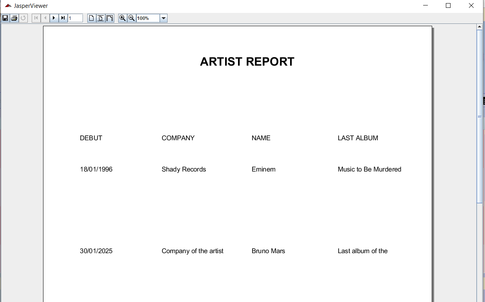

Esta ventana permite a los clientes explorar sus artistas musicales favoritos de manera sencilla e intuitiva. Se proporciona una barra de búsqueda y filtros para facilitar la localización de artistas, así como opciones para acceder a la tienda de productos y la sección de conciertos.
Para buscar un artista, introduzca su nombre o el de la compañía discográfica en la barra de búsqueda. La lista de artistas se actualizará automáticamente para mostrar los resultados coincidentes.
Filtrado por fecha de debutPuede filtrar la lista de artistas según su fecha de debut seleccionando la opción correspondiente en el menú de filtros. Esto le permitirá encontrar artistas según el período de su debut musical.
Exploración de artistasDebajo de la barra de búsqueda, encontrará un listado detallado de artistas que incluye su nombre, fecha de debut, compañía discográfica y su álbum más reciente.
Acceder a la tienda de productosPulsando el botón Tienda, será redirigido a la sección donde podrá explorar y adquirir productos relacionados con sus artistas favoritos.
Consultar conciertosDando click derecho en la pnatalla, pulsando en el menú de contexto la opción Conciertos, accederá a la sección donde podrá consultar los próximos eventos y conciertos de los artistas disponibles en la aplicación.
Imprimir listado de artistasDando click derecho en la pnatalla, pulsando en el menú de contexto la opción Imprint se abrirá una ventana donde puede ver un documento
que contiene un listado de los artistas que existen en la aplicación:

Mediante los botones de la parte superior de la ventana podrá imprimir o almacenar dicho informe.
Pulsando el botón Ayuda verá este documento de ayuda.